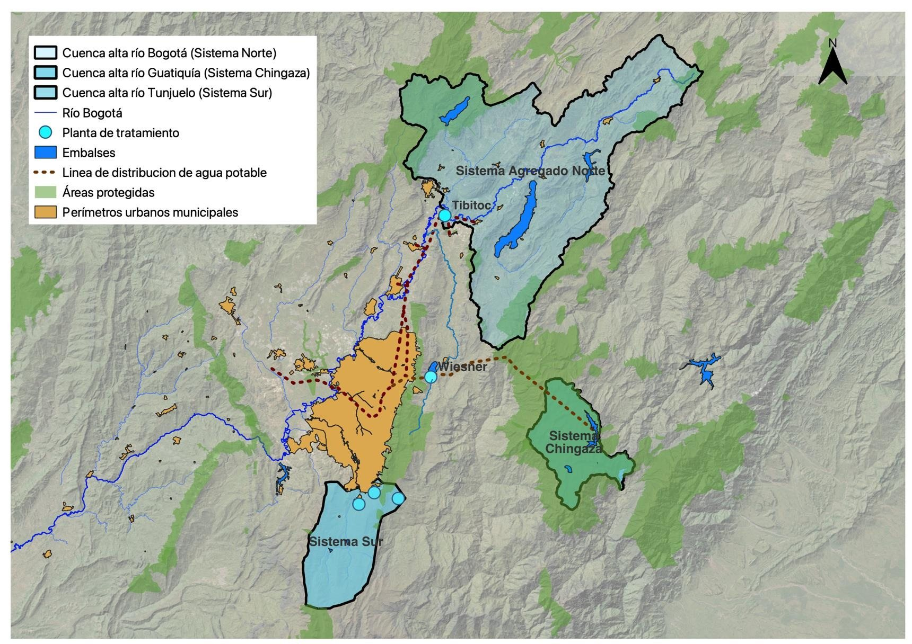
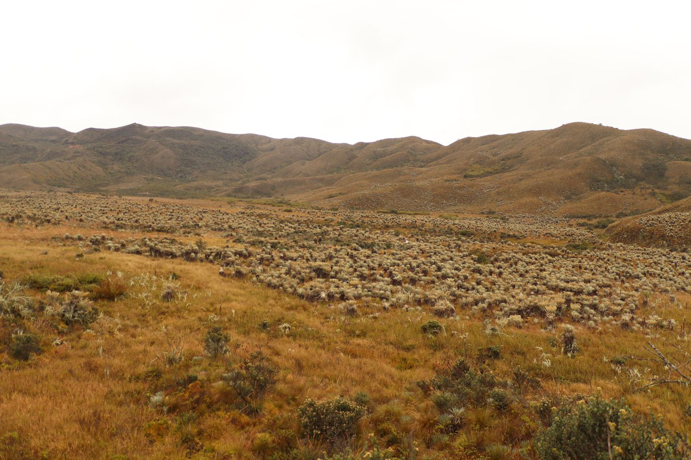

¿De dónde viene el agua de la llave?
De tres sistemas que recogen agua en los páramos y la guardan en embalses. Un embalse es como el tanque de una casa, pero para toda la ciudad: se llena cuando llueve y Bogotá vive de lo guardado en la temporada seca.
El sistema de abastecimiento de Bogotá

Toque la imagen para verla completa y ampliarla. Fuente: Diego Restrepo, presentación «Bogotá Water Crisis» (2025).
Toque un embalse, una planta o un páramo para ver su ficha. Con el botón de capas (arriba a la derecha) se prenden y apagan los sistemas, el río Bogotá y las plantas de aguas residuales. Esquema: ubicaciones y trazados aproximados.
Tres sistemas
Sistema Chingaza ·
El agua nace al otro lado de la cordillera, en el páramo de Chingaza. Se guarda en el embalse de Chuza y llega a Bogotá por túneles hasta la planta Wiesner.
Sistema Norte ·
Los embalses de Tominé, Neusa y Sisga guardan agua del río Bogotá y sus afluentes. Se potabiliza en la planta Tibitoc.
Sistema Sur ·
Viene del páramo de Sumapaz por el río Tunjuelo, con los embalses de Chisacá y La Regadera.
Personas abastecidas:
¿Qué tan lleno está el tanque?
Chuza es el embalse principal del Sistema Chingaza. El Acueducto informa el sistema completo (Chuza y San Rafael), por eso sus cifras pueden ser un poco distintas.
Detalle técnico
¿Qué nos llevó al racionamiento de 2024?
El racionamiento duró un año, del 11 de abril de 2024 al 12 de abril de 2025.
¿Qué tan lleno estuvo Chuza?
La línea punteada es el nivel recomendado: lo que el embalse debería tener cada mes para pasar la temporada seca sin riesgo. Los círculos numerados son los momentos de la lista de abajo. Datos: CAR.
Detalle técnico
Cronología de la crisis
Plan Maestro de Abastecimiento y ampliaciones
Tibitoc, Wiesner, Río Blanco y La Regadera–Vitelma: qué se planeó, qué se retrasó y cómo encaja el cambio climático.
¿Funcionó el racionamiento?
Racionar es bajar el consumo para que el agua guardada alcance hasta que vuelva la lluvia.
La meta era bajar el consumo a 15 m³/s
En ningún periodo se logró en promedio. 1 m³/s son 1 000 litros por segundo.
Fuente: Diego Restrepo, presentación «Bogotá Water Crisis» (2025).
¿Cuánta agua usa un bogotano?
Bogotá ya consume poco por persona; por eso cada litro adicional de ahorro cuesta más.
Así cambió el consumo con cada esquema
Cuando el racionamiento se flexibilizó, el consumo subió cerca de 0.8 m³/s. En los festivos baja porque mucha gente sale de la ciudad.
Promedio de 7 días leído de la gráfica de consumo diario de la presentación «Bogotá Water Crisis» (Diego Restrepo, 2025): valores aproximados. Los puntos son festivos (dato diario). Franjas naranjas: racionamiento flexibilizado o en pausa.
¿Hay riesgo hoy?
¿Cuánta agua está llegando al embalse?
Señales que cualquiera puede vigilar
Palabras clave
- Embalse
- Lago artificial que guarda el agua de los ríos para usarla en la temporada seca.
- Capacidad útil
- El agua del embalse que sí se puede sacar. Los porcentajes de esta página son sobre esa capacidad.
- Nivel recomendado (curva guía)
- Lo que el embalse debería tener cada mes para pasar la temporada seca sin riesgo.
- Afluencia
- El agua que entra al embalse desde los ríos del páramo.
- m³/s
- Metros cúbicos por segundo: 1 m³/s son 1 000 litros cada segundo.
- Mm³
- Millones de metros cúbicos: 1 Mm³ llena unas 400 piscinas olímpicas.
¿De dónde debería salir el agua en 15 o 30 años?
Lo fundamental es la redundancia: dos sistemas que se respaldan. No es seguro depender sólo de Chingaza.
¿Qué tan llenos están los cuatro embalses?
Porcentaje de llenado en 2026. Datos: CAR.
Detalle técnico
La lluvia de Chingaza viene de lejos
de la lluvia que cae en Chingaza viene de humedad que llega de otras regiones; sólo el 7 % se produce en el propio páramo. Si se degrada la Amazonía, llueve menos en el embalse.
¿De dónde llega la humedad?
Fuente: Escuela Colombiana de Ingeniería Julio Garavito (2023).
Detalle técnico
«Amazonas – Chingaza: evaluación de la disminución de la superficie amazónica y sus afectaciones sobre las precipitaciones en el páramo y el sistema Chingaza», 28 ago 2023. Origen de 32 120 trayectorias de humedad calculadas cada 6 horas entre 2000 y 2022, con 10 días de seguimiento hacia atrás; 7 612 (24 %) vienen de la cuenca amazónica.
Chingaza II y el embalse La Playa
Un túnel más, el cambio climático, la degradación de los páramos y los impactos sobre el páramo donde quedaría La Playa.

¿Reusar el agua residual?
El reúso ya es una realidad: el agua de la PTAR Salitre se usa en la industria. Volverla agua potable es viable, pero exige inversiones extraordinarias; vale la pena pensar en otros usos, incluso el agrícola.
PTAR Canoas:
El agua no nace en Bogotá
Nace en Villapinzón, Fómeque o La Calera, y sale sucia hacia La Mesa, Girardot o Apulo.
Una región hídrica
Más que una empresa regional de acueducto, una región hídrica: un espacio para decidir de forma coordinada y conjunta entre los municipios que comparten el territorio.
Municipios que compran agua en bloque al Acueducto:
Agua vendida en bloque:
¿Qué datos deberían ser públicos?
¿Qué aprender de otros?
Ciudad del Cabo, 2015–2018
Tres años seguidos de poca lluvia dejaron las represas cerca del 20 %. La ciudad no se quedó sin agua, sobre todo porque bajó el consumo.
Fuente: Rolfe Eberhard, «Strategies to improve decision making in a crisis: lessons for utility and city leaders from the Cape Town experience», Global Water Intelligence, 2024.